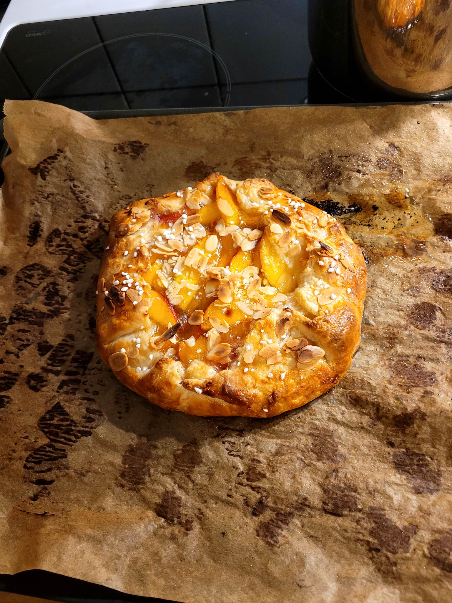

Ingredients
Dough
- 150 g of wheat flour
- 1 teaspoon of sugar
- ¼ teaspoon of fine grain sea salt
- 100 g of cold butter, cut into small pieces
- 120 g Philadelphia cream cheese
Galette with nectarines or any fruit
- about 750 g of ripe nectarines or other fruit
- 50 - 100 g sugar (adjust the amount to the type of fruit used)
- juice of ½ lemon
- 1 tablespoon of potato flour
- seeds from 1 vanilla pod (or 1 tablespoon of vanilla extract or 1 vanilla sugar)
- 1 tablespoon of breadcrumbs
- 1 egg yolk
- sugar for sprinkling
Instructions
- Put all the ingredients for the dough in the bowl of a food processor or food processor, combine. You can also do it with a mixer. Form a disk, flatten it and wrap it with cling film. Put it in the fridge for an hour or 20 minutes in the freezer if you're in a hurry.
- In the meantime, prepare the fruit. Peel and cut the fruit into slices, add 50 g of sugar (in the case of sweet nectarines, the berries will probably need 100 g), lemon juice, vanilla and potato flour. Leave for min. 30 minutes until the fruit releases its juices.
- Pour the juice into a pot and boil it. Cook over low heat, stirring often, until it thickens into a thin jelly, about 3 minutes. Mix the resulting glaze (maximum 1/2 cup) with the fruit. Leave to dry completely.
- Sprinkle the dough lightly with flour. Roll out between two sheets of paper into a disk about 30 cm in diameter. Leaving a margin of about 4-5 cm, sprinkle the dough with breadcrumbs and put the fruit on it. Fold the sides inwards, covering the fruit a little. Transfer the galette along with the paper to a plate. Put in the fridge for an hour, the dough must set otherwise it will fall apart during baking. This is a very important step - don't skip it.
- In the meantime, heat the oven to 220 degrees Celsius (top-bottom). Slide the galette with the paper off the plate onto the baking sheet. Brush the sides with beaten egg and sprinkle with sugar. Bake for about 25-30 minutes, until the bottom and sides are well browned. If the top starts to brown too quickly, cover it with aluminum foil. Cool on the baking sheet. Eat it with ice cream or whipped cream. The galette tastes best the day it's baked, but it's unlikely to last much longer.